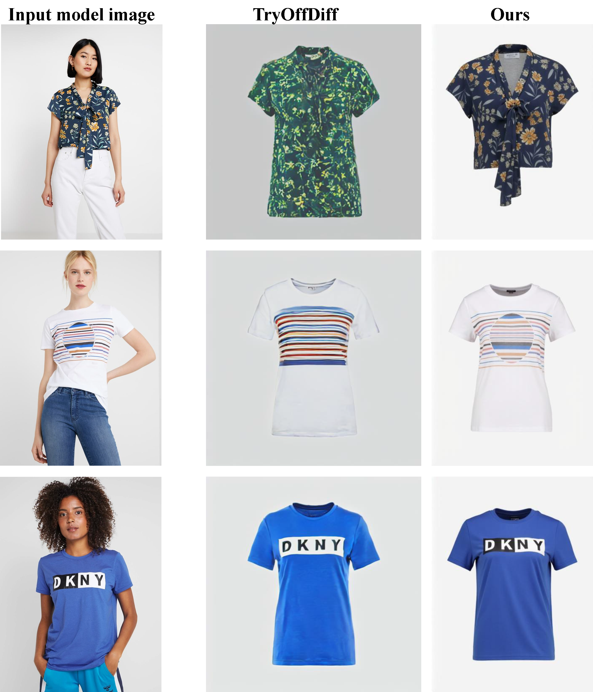

Results
Garment Reconstruction

Model-free Virtual Try-on

Virtual Try-on

@article{any2anytryon2024,
title={Any2AnyTryon: Leveraging Adaptive Position Embeddings for Versatile Virtual Clothing Tasks},
author={},
journal={},
year={2024}
}